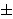
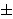

,
.
,
.
,
.
,
.
Meðu poljima  ,
da bi se minimiziralo vrijeme potrebno za modularno
množenje, preporuèa se da p ima oblik 2k
 c
za neki mali prirodni broj c (npr. Mersenneovi
prosti brojevi oblika 2k - 1,
2160 + 7, 2255 + 95, i sl.).
,
da bi se minimiziralo vrijeme potrebno za modularno
množenje, preporuèa se da p ima oblik 2k
 c
za neki mali prirodni broj c (npr. Mersenneovi
prosti brojevi oblika 2k - 1,
2160 + 7, 2255 + 95, i sl.).
Kod polja karakteristike 2, osim broja elemenata, moramo odabrati i naèin reprezentacije elemenata. Najèešæe se koriste trinomijalne i optimalne normalne baze. Kao što smo ranije napomenuli, izbor takvih baza omoguæuje efikasniju implementaciju. No, takve baze ne postoje za svako konaèno polje karakteristike 2, pa i to utjeèe na izbor polja. Neki popularni izbori su npr. 2163, 2191, 2239 i 2431.
Kod izbora eliptièke krivulje trebamo paziti da problem
diskretnog logaritma bude "težak". Kako smo veæ više puta
napomenuli, ECDLP je, prema svemu što vam je danas poznato,
vrlo težak problem. Meðutim, postoje tipovi eliptièkih krivulja
kod kojih je taj problem nešto (ali èak puno) lakši.
Zato takve krivulje treba izbjegavati. Situacija je vrlo
slièna kao kod kriptosustava koji svoju sigurnost
zasnivaju na teškoæi faktorizacije velikih prirodnih brojeva
(npr. RSA ili Rabinov). I tamo je tvrdnja da je broj
oblika pq, gdje su p i q veliki prosti brojevi,
teško rastaviti na faktore
toèna samo ako se p i q odaberu pažljivo
(npr. p i q ne smiju biti jako bliski;
brojevi p - 1 i q - 1 moraju imati barem jedan
veliki prosti faktor).
Navest æemo sada tipove eliptièkih krivulja koje treba izbjegavati:
)
nema niti jedan veliki prosti faktor. Preciznije,
#E()
bi trebao imati barem jedan prosti faktor n veæi od
2160, jer bi o protivnom protivnom ECDLP mogli
riješiti BSGS metodom. Obièno se krivulja E odabire tako
da broj
#E()
oblika h
 r,
gdje je r prost broj, a h = 1, 2 ili 4.
r,
gdje je r prost broj, a h = 1, 2 ili 4.
) = q.
Za takve krivulje postoji polinomijalni algoritam za ECDLP
koji su otkrili Smart,
Satoh, Araki i
Semaev. Stoga se analomalne
krivulje nikako ne bi smjele koristiti.
,
gdje je q = pk,
kažemo da je supersingularna ako p dijeli t.
Za krivulje nad
za p  5
to znaèi da je t = 0, tj.
#E() = p + 1.
Za takve krivulje postoji tzv. MOV-napad
(Menezes, Okamoto,
Vanstone) koji u polinomijalnom vremenu
reducira ECDLP u polju
#E()
na DLP u polju
5
to znaèi da je t = 0, tj.
#E() = p + 1.
Za takve krivulje postoji tzv. MOV-napad
(Menezes, Okamoto,
Vanstone) koji u polinomijalnom vremenu
reducira ECDLP u polju
#E()
na DLP u polju
 .
Zbog toga bi supersingularne krivulje trebalo izbjegavati.
Nadalje, trebalo bi izbjegavati sve krivulje za koje
postoji mali prirodni broj k (recimo k
.
Zbog toga bi supersingularne krivulje trebalo izbjegavati.
Nadalje, trebalo bi izbjegavati sve krivulje za koje
postoji mali prirodni broj k (recimo k
 20)
takav da je qk
20)
takav da je qk
 1
(mod #E()),
zato što u tom sluèaju MOV-napad reducira ECDLP na DLP u polju
.
).
1
(mod #E()),
zato što u tom sluèaju MOV-napad reducira ECDLP na DLP u polju
.
).
Primjer: Navest æemo jedan primjer koji zadovoljava sve gore
navedene savjete i zahtjeve na izbor polja i eliptièke krivulje.
Neka je krivulja E zadana jednadžbom
y2 = x3 + x + 1010685925500572430206879608558642904226772615919
nad poljem E(),
gdje je p = 2160 + 7.
Tada je
#E() =
1461501637330902918203683038630093524408650319587.
Može se dokazati (npr. metodom dokazivanja prostosti pomoæu
eliptièkih krivulja!) da su brojevi p i
#E()
prosti.
17.
23
sa svojstvom da je
#E(23)
prost broj.
| Web stranica seminara | Andrej Dujella - osobna stranica |